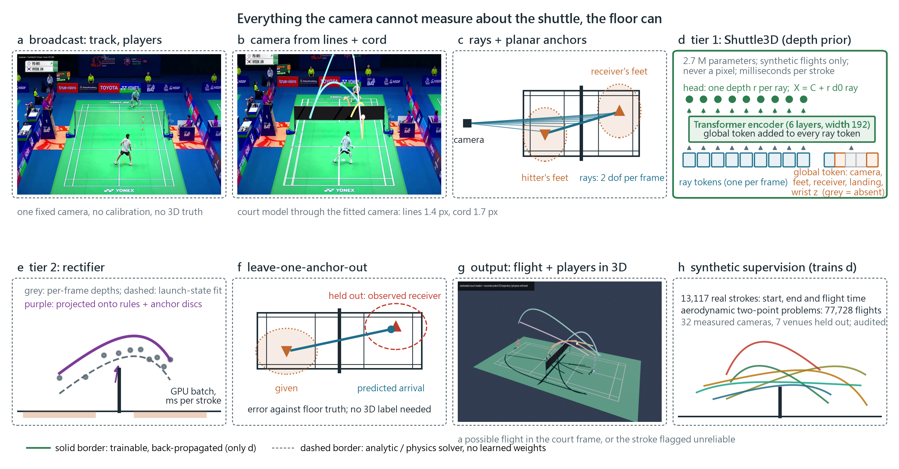
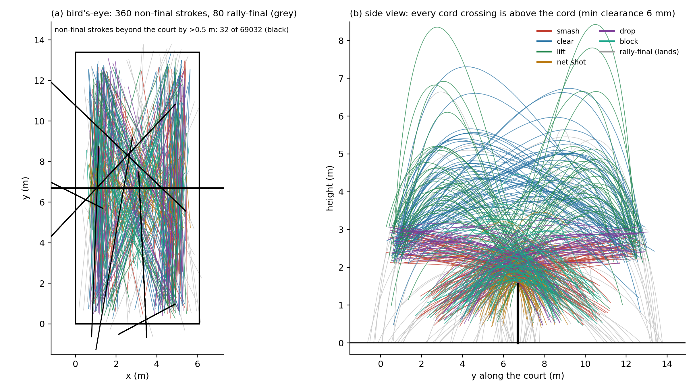
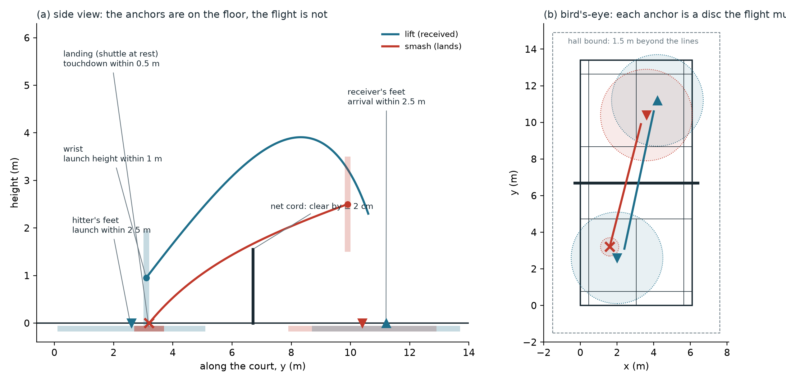
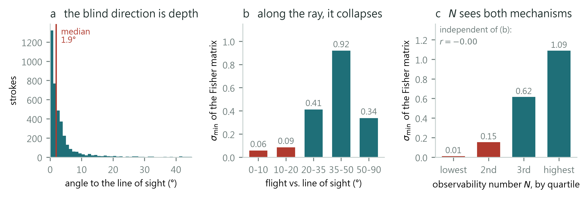
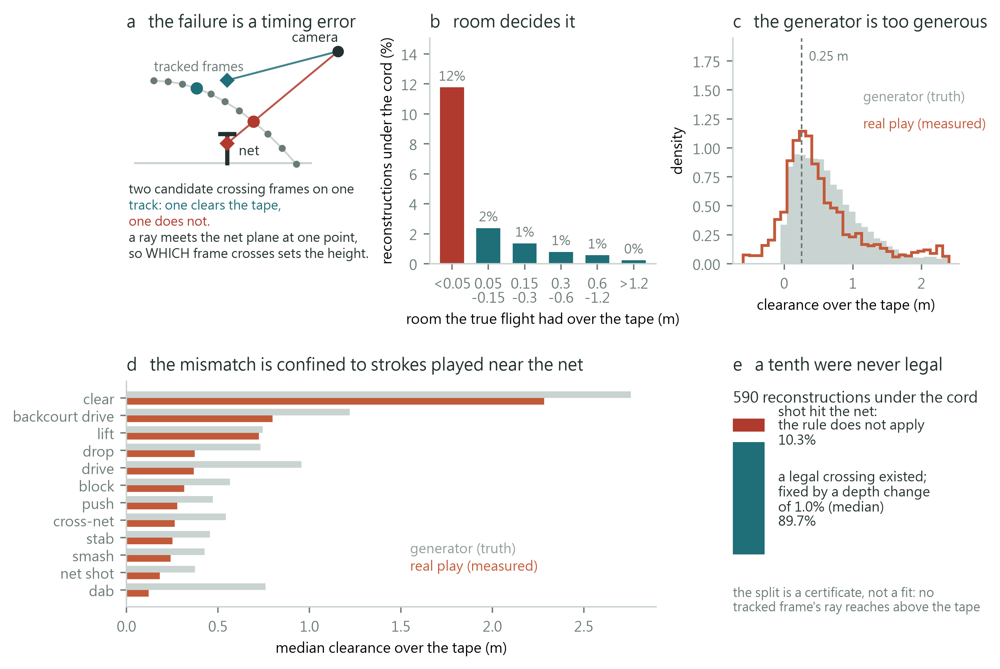

SimTrack3D: Monocular 3D Trajectory Prediction of Fast-Moving Shuttlecocks via Broadcast-Calibrated Sim-to-Real Transfer
Paper 1 of 2 · Project page · 2026

Demo
Abstract
Recovering a 3D shuttlecock trajectory from a single broadcast camera is ill-posed in a way no other ball sport is. The shuttle is small and featureless — 6.9 px across a 1280-wide frame, a streak when it moves — so no frame carries scale; a smash is ten to fifteen nearly straight frames along the optical axis, so the curvature that would fix depth is buried in tracker noise; and the shuttle never bounces, so the floor never anchors the flight. Validating by 2D reprojection is blind to exactly this: on a synthetic smash, reconstructions whose 3D error spans 0.06 to 2.78 m — a factor of 46 — agree in 2D to within 0.20 px, below any tracker's noise floor.
A single view cannot measure the shuttle's depth, but it measures the floor exactly, and the game touches the floor at every stroke. SimTrack3D is built on that. Calibration comes first, because a court homography is degenerate for focal length: we recover it from the net cord, whose height above the court is fixed by the rules, and withhold the cord's 26 mm catenary sag as an independent physical gate — it rejects venues whose fits look excellent but whose geometry is wrong, and it yields 32 measured broadcast cameras spanning 12–39 m. We then synthesise 77,728 physically feasible flights by solving aerodynamic boundary-value problems anchored to 13,010 real annotated strokes, and train Shuttle3D, a ray-depth transformer, on them alone. A rectifier then imposes the rules of the court as hard inequalities rather than soft penalties, so what the estimator returns is legal exactly, not approximately.
Shuttle3D reaches 0.33 m median 3D error on held-out synthetic strokes from the image alone, unchanged through cameras it never saw. On 6,553 real tournament strokes the estimator returns a flight the court permits for 96.0% of them and flags the rest, so no trajectory it returns breaks a rule of the game, against 18.3% physically possible for MonoTrack; arrival error is 0.60 m against MonoTrack's 3.33 m, at no measurable reprojection cost. Across twenty-two venues calibrated from broadcast alone the raw network is impossible on 17.9% of strokes, and cameras it never saw are within six tenths of a point of cameras it trained through. Finally we derive an observability number N, computable from the 2D track with no 3D truth, that predicts the Cramér–Rao bound (CRLB ∝ N−0.98, R² = 0.83) and marks where the image stops answering and the tactical prior takes over.
1. Introduction
Deep heatmap trackers such as TrackNet have made 2D localisation of small, fast sports projectiles reliable.[1, 2, 3] Lifting those pixel tracks into a 3D flight has not followed. Monocular 3D vision normally resolves depth from something the object supplies — known dimensions, articulation, texture that deforms with distance. In broadcast badminton every one of those cues fails at once.
Small kills the appearance cue. A shuttlecock spans about 6.9 px in a 1280-wide broadcast frame and reaches 17 px only by smearing into a motion streak. It has no surface texture, no resolvable orientation and no metric scale, so a single frame carries essentially no depth information.
Fast kills the motion cue. Depth along a viewing ray has to come from the curvature that gravity and drag put into the flight. A smash lasts 10–15 frames at 30 fps and runs nearly along the optical axis, so its projection is close to a straight line and the curvature is buried under the tracker's noise.
Never bouncing kills the geometric anchor. In tennis and table tennis a bounce on a calibrated plane fixes one 3D point exactly, and systems such as TT3D are built on it.[4, 5] A shuttlecock flies racket to racket and touches the floor once, to end the rally — usually where the tracker has already lost it.

The reprojection fallacy. Broadcast badminton has no 3D ground truth, so monocular work is validated on real footage by proxies: reprojection residual, landing grids, consistency with the net and the bounce. Fig. 1 shows what the first of those is worth on the strokes that matter. Fixing the launch height and refitting the rest, a smash admits reconstructions whose 3D error spans 0.06 to 2.78 m — a factor of 46 — inside a 2D residual band of 0.20 px, below any tracker's noise floor. The other proxies are no safer, and this is a limit the field shares rather than a fault of any one paper — ours included, since we too have only 14 strokes with a true 3D anchor. §5.5 shows that whether a reconstruction clears the net is decided by a 1% change in its depth, so passing that test measures the boundary, not the accuracy.
Why it stayed unsolved: two bottlenecks. The first is geometric. A broadcast camera is uncalibrated, and every court line lies in one plane, so the lines fix a homography but not a focal length; Zhang's two constraints from a single plane are degenerate, and on our venues they disagree about the focal length by 65%.[6] Without a focal length, depth along a ray has no metric scale. The second is supervisory. Synthetic pipelines have sampled launch states from broad ranges, which produces flights no player would hit — and, in the unaudited build we started from, 10.6% that pass under the net — while real footage supplies no 3D label at all.
What the camera does measure. A single view cannot measure the shuttle's depth, but it measures the floor exactly: the court homography maps floor points to metres with about one pixel of residual. And although the shuttle rarely touches the floor, the game does, at every stroke — the hitter's feet, the receiver's feet, the court lines, the landing that ends the rally. Each is a planar anchor: a floor position with a time and a radius that the flight must pass through. The net adds the one rigid structure a court has above that plane.
SimTrack3D is an estimator built on that observation — that a shuttlecock's 3D flight is recovered not from the shuttle, which carries no information, but from the floor beneath it, the net above it, and the physics that connects them.
- Calibration from the net cord, gated by its sag. A non-coplanar calibration that resolves the focal-length degeneracy of court lines using the net cord, whose height is fixed by the rules, and then withholds the cord's 26 mm catenary sag as an independent physical check. The sag is never fitted, so it can fail: it rejected venues whose residuals were excellent and whose geometry was wrong. Thirty-two broadcast cameras are recovered, twenty-two of them with no supplied homography and nineteen of those with no human input of any kind.
- Planar anchors as the observation model. One formulation in which a stroke is a single launch state seen through viewing rays and through a set of floor anchors with times and radii, read from the video rather than from annotation. Anchors may be missing; the model and the solver both treat the set as data.
- Aerodynamically anchored synthesis. 77,728 flights obtained by solving quadratic-drag boundary-value problems anchored to 13,010 real annotated strokes, then filtered so that every flight clears the cord by 2 cm, stays above the floor and inside the hall. The distribution is the game's, not a range we chose.
- An estimator that does not return an impossible flight. Shuttle3D, a ray-depth transformer that supplies the depth level a single view lacks, followed by a bounded repair that treats the court's rules as hard inequalities rather than penalties that can be paid.[7, 8] Before a flight is returned it is re-integrated in double precision and re-checked, so what comes out is legal exactly; on 6,553 real tournament strokes that is 96.0% of them at 31 ms each, against 18.3% physically possible for MonoTrack, with arrival error 0.60 m against 3.33 m. The 4% for which no legal flight is found are flagged rather than forced.
- Leave-one-anchor-out evaluation, and the theory behind it. Real footage has no 3D truth, but it has anchors: holding each out and predicting it from the rest measures what every anchor is worth without a single 3D label. An observability number N, computable from the 2D track alone, predicts the Cramér–Rao bound (CRLB ∝ N−0.98, R² = 0.83), and the model is measured below that unbiased bound by up to 4.6× exactly where N is lowest — which is possible only by being biased, and locates where the image stops answering and the training distribution takes over.[9]
2. Related work
This section is organised by the problem each literature solves rather than by venue, because the difficulty here is that no single community owns it: the tracker comes from sports vision, the depth ambiguity from monocular geometry, the training data from the sim-to-real literature, the calibration from sports field registration, and the guarantee from constrained estimation.
2.1 Tracking a small, fast object in 2D
The 2D half of this problem is solved well enough to build on. TrackNet[1] established the recipe still in use: a heatmap network consuming several consecutive frames so that motion, not appearance, localises an object too small to have texture. Successors extend it with trajectory-aware refinement and rectification[2] and with motion attention[3], and the same architecture family has been retargeted to soccer[10], table tennis[11] and to a sport-agnostic baseline[12]. Speed-accuracy trade-offs for ball detection are surveyed in[13], and the general difficulty of small-object detection and tracking in[14].
What matters for us is that a broadcast shuttlecock is not a point but a streak. Motion blur is treated as a nuisance to be removed in general vision[15], but in racket sports it carries information: BlurBall[16] estimates ball position and blur jointly and shows the streak improves localisation, and blur-aware detection has been applied to broadcast sport directly[17]. Our own measurements on 9,312 annotated shuttlecock positions agree: the streak's long axis grows linearly with image speed while its short axis is constant to 0.20 px, which is what makes exposure self-calibrating from the video alone. Badminton-specific detectors continue to appear[18][19][20], including real-time smash-speed estimation on device[21].
Multi-object tracking metrics and player tracking are adjacent but distinct problems[22][23][24][25]; we use annotation for stroke segmentation rather than tracking players.
2.2 Monocular 3D trajectory reconstruction in racket sports
Reconstructing 3D ball flight from one view is an established goal with a consistent structure: fit a physical flight model to a 2D track through a calibrated camera. Early table-tennis systems reconstructed trajectories for performance analysis[26][27][28]; robot table tennis needs the same estimate in real time and solves it with filtering[29][30][31]. Multi-camera systems avoid the ambiguity entirely[32] and are therefore not comparable.
The closest work to ours is MonoTrack[33], which reconstructs badminton shuttle trajectories from monocular video by fitting a per-shot launch state and drag coefficient under a reprojection loss. We re-implement it faithfully as our baseline. In table tennis the same idea has been pushed further: TT3D[4] uses the bounce on a calibrated table as a hard geometric anchor, TT4D[5] builds a pipeline and dataset for 4D reconstruction from monocular video, and Uplifting Table Tennis[34] trains a transformer on synthetic trajectories to lift 2D tracks to 3D with spin. Related efforts recover 3D localisation from 2D labels using physics[35], estimate spin from broadcast footage[36], reconstruct a ballistic shot from a monocular broadcast[37], and localise a soccer ball in real time from a single camera[38][39].
Two of these deserve separate mention because they share our strategy. SynthNet[40] and "Where Is The Ball"[41] both train on synthetic trajectories and represent the input in a camera-independent form; the latter reports an ablation showing that a canonical ray representation outperforms domain-randomised pixel input, which is independent support for the parameterisation we adopt. The gap we address is not that these methods lift badly. It is that every one of them validates on real footage with a proxy — reprojection error, a landing tile, a bounce or net consistency check — and none reports whether that proxy can pass while the 3D is wrong.
Badminton has also been studied without 3D reconstruction: shuttlecock trajectory prediction from player context, stroke and skill modelling with transformers[42], self-play simulation of the game[43], and event-camera reconstruction of swing dynamics[44]. Earlier work estimated shuttle trajectory from motion blur in a single image[45], which is the same physical signal we exploit for exposure.
2.3 Sim-to-real transfer: what the field actually does
Training on synthetic data and deploying on real data is a mature field with a small number of distinct mechanisms, and it is worth being precise about which one we use.
Domain randomisation makes the simulator's nuisance parameters so variable that the real world looks like one more sample[46]. It underlies CAD2RL[47] and drone racing[48], has been given structure by conditioning on scene context[49], analysed theoretically[50], benchmarked[51], and applied to object detection for robotics[52]. Its known failure mode is that the randomisation range must bracket the real value; when it does not, no amount of variety helps.
Real-to-sim, or system identification, takes the opposite route: measure the real system and set the simulator to match. SimOpt closes the loop by updating the simulation distribution from real rollouts[53], sim-to-sim canonicalisation trains a mapping to a canonical rendering[54], residual physics learns the part of the dynamics the model misses[55], and differentiable simulators fit parameters by gradient[56][57][58][59]. Sensor-level realism can be identified the same way[60][61].
Domain adaptation aligns features or pixels using unlabelled real data: adversarial feature alignment[62][63], entropy minimisation[64], self-training and co-training[65][66][67], statistical alignment[68], frequency-domain transfer[69], and standard benchmarks[70]. We use none of it. Our model never sees real video during training, which is a limitation we state rather than a design virtue.
Image-level translation refines synthetic images towards realism[71][72], optionally with a task-consistency term[73]. Photorealism is the competing school: photorealistic synthetic datasets[74][75][76], physically based rendering pipelines[77][78][79][80], and applications from spacecraft pose[81] to street scenes[82]. Reviews of synthetic-data generation[83][84] and of how a transfer budget should be spent[85] survey the trade-offs. Mixing a little real data in is often the cheapest win of all[86].
Our approach sits in the real-to-sim family and is unusually literal about it: rather than randomising camera parameters over an assumed range, we measure real broadcast cameras (thirty-two in all, twenty-five of them used for training) and sample only from those, and rather than sampling flights from a prior, we solve boundary-value problems anchored to 13,129 annotated strokes from real matches. What we do not do is close the loop — our identification is one-shot, not iterative as in SimOpt.[53]
2.4 Synthetic data for sports vision
Synthetic data has reached sport recently and mostly for detection rather than 3D: SoccerSynth-Detection renders soccer scenes to train player detectors[87] and SoccerSynth Field does the same for field detection[88]. Virtual environments have long been used to study sports skill itself[89]. The 3D-trajectory works of §2.2 that train on synthetic flights[40][34][41] are the closest precedents for what we build, and they differ from us mainly in how the camera distribution is chosen.
2.5 Camera calibration for broadcast sport
A planar court gives a homography, and a homography does not determine focal length: this is the classical degeneracy of plane-based calibration[6], and it is why single-view calibration usually recruits extra structure such as vanishing points[90][91][92][93] or a learned prior[94]. Sports field registration is now a field of its own, with keypoint- and line-based methods[95][96][97][98][99], graph-based homography estimation[100], sequential Bayesian estimation across a video[101], and a benchmark protocol[102].
Almost all of this work registers the ground plane, which is exactly the part that does not constrain focal length. Our contribution is to recruit the net cord — the only rigid off-plane structure a badminton court offers — and, separately, to gate each calibration on the cord's catenary sag, a physical invariant the fit never sees.
2.6 Physically constrained reconstruction
Enforcing physics on a monocular reconstruction is well established for humans: scene constraints resolve pose ambiguity[103], gravity constrains human-object reconstruction[104], trajectory optimisation enforces physical consistency on pose sequences[105], and physical plausibility can be built into prediction[106]. Physics-informed learning more broadly is surveyed in[107][108][109][110].
The distinction that matters here is soft versus hard. Most of the work above adds physics as a loss term, which can always be traded away. Enforcing constraints exactly is a separate literature: constrained Kalman filtering projects the unconstrained estimate onto a feasible set[7], differentiable optimisation layers embed a constrained solve inside a network[111], and architectures exist that satisfy hard constraints by construction[8]. We take the projection route, applied per stroke to a six-parameter flight, and we report what feasibility costs in reprojection error rather than only that it was achieved.
2.7 Observability, degeneracy and estimation bounds
That a monocular view leaves depth weakly determined is not news; what is useful is to quantify it per stroke. Bundle adjustment has long treated the null space of the normal equations as a first-class object — gauge freedom, handled by minimum-norm steps[112]. In filtering, the observability-constrained EKF identifies the same kind of unobservable subspace in order to protect it from spurious information[113], and observability-aware trajectory optimisation plans motions that make states observable[9]. Visual-inertial estimators must handle the same degeneracies[114].
We use that subspace differently: not to protect it and not to plan around it, but as the place to look for a physically feasible solution, on the argument that moving there is nearly free in image terms. We pair this with a Cramér–Rao bound on the six launch parameters, which turns "this stroke is hard" into a number that can be compared against what a model actually achieves.
2.8 Does in-distribution error predict real-world performance?
Our central negative result runs against a well-supported regularity. "Accuracy on the Line" reports a strong linear relationship between in-distribution and out-of-distribution accuracy across many benchmarks[115], and where that relationship holds, a synthetic test set would be a fair guide. But it is not universal: in-distribution and out-of-distribution performance are sometimes inversely correlated[116], and underspecification explains why two models with identical validation loss can behave differently under shift[117]. Metrics designed for the sim-to-real gap itself have begun to appear[118].
The closest precedent for our diagnosis is in human pose: physical plausibility can be measured without ground truth by simulating the result[119], and that work also finds its own plausibility proxy does not track accuracy reliably — the same shape of result we obtain for net clearance. Reference-free consistency assessment is being explored for generated video as well[120]. Our contribution here is the sharper, rank-order version of the claim, measured on 6,553 real strokes: across stroke types, held-out synthetic error carries no usable signal about real-footage error, and neither does the image-side observability number.
2.9 Shuttlecock aerodynamics
The flight model we integrate rests on a well-characterised object. The shuttlecock's drag coefficient, terminal velocity and strongly asymmetric trajectory have been measured in wind tunnels and free flight[121][122][123][124][125][126][127], simulated[128][129], and summarised for the sport as a whole[130]. A terminal velocity near 6.8 m/s and a drag-dominated, markedly asymmetric arc are what make a badminton flight identifiable from a short observation at all, and they are also why a ballistic parabola is not an adequate model.
3. Method

3.0 The algorithm
What follows is one loop, not a pipeline of stages. Each step exists because a measurement showed the previous one was insufficient, and the loop closes because the last step supplies training signal to the first.
| step | what it does | why it is needed |
|---|---|---|
| measure | Recover each broadcast camera from the court lines and the net cord, and estimate the real distribution of strokes from match annotation. | A coplanar court leaves focal length undetermined, and real broadcast geometry lies outside the ranges other synthetic pipelines sample (§5.1). |
| propose | A network trained on flights anchored to that distribution proposes a depth along each viewing ray. | The image alone does not determine depth: the Cramér–Rao bound varies 16× across stroke types and exceeds 1 m for the shortest arcs (§4). |
| dispose | Fit one launch state to the proposal and repair it: a fixed penalty projection onto the set of flights the court permits, in the directions the image constrains least. | 11.6% of the network's real-footage reconstructions (6,924 strokes) still break a rule the stroke's own existence forbids, even after the rules are trained into the network; a penalty term in the loss does not stop that, because a penalty can be paid, and a repair after the fact can (§3.4). |
| weigh | Score each stroke by the reprojection residual of the fitted flight and by the price the projection paid in pixels. | Both are computable with no ground truth, and on real strokes they track true endpoint error where nothing else we tested does (§6.1). |
| close (extension, not part of the reported system) | Retrain the proposer on the repaired flights it can trust, so the physics moves from a test-time repair into the prior. | Reported as an extension in §S1: it works, but it uses real footage as supervision, and the results in §5 are from a model that never does (§3.5). |
The principle underneath is a division of labour that the observability analysis makes explicit rather than assumes. The image fixes what it can, the prior supplies what the image cannot, physics deletes what the prior gets wrong, and the disagreement between prior and physics is the only supervision real footage can give. Everything in this section is an instance of that sentence.
Stated as an estimator: let u1..K be the tracked pixels of one stroke, P the calibrated camera, s = (x0, v0) a launch state with flight Φ(s, t) under the drag model of §3.2, and A = {(ti, pi, ri)} the planar anchors of §3.5. The feasible set Ω is every launch state whose flight satisfies the court's rules and passes within ri of pi at ti for every anchor. The proposal step gives a prior mean X̂(A) from the ray-depth network, which receives the same anchors as tokens; the disposal step returns s* = argmins ∈ Ω(A) [ reprojection(s) / σ2D2 + ρ( distance(s, X̂) / σprior2 ) ] and the closing step adds { (u, A, s*) : residual(s*) ≤ τ } to the training set of the proposer. Removing one anchor from A and predicting it from s* is the evaluation of §5.
3.1 Catenary net-cord model and non-coplanar calibration
The painted boundary lines of a badminton court lie on the ground plane Z = 0. A planar homography maps court coordinates to image coordinates:
Because the lines are coplanar the homography carries only eight degrees of freedom, leaving the focal length coupled to elevation and distance. Evaluating Zhang's two constraints on this footage yields a 65% discrepancy in the focal estimate. Non-coplanar structure is required to decouple intrinsics from extrinsics.
The net cord supplies it. Under BWF specification the cord is fixed at post height 1.55 m and sags to 1.524 m at the centre, an invariant vertical displacement of 26 mm. In a frame centred on the net plane the cord is a catenary:
and because the sag is small relative to the net width L = 6.10 m, a second-order expansion is exact to well below a pixel:
Using sub-pixel ridge detection on player-free temporal median backgrounds we extract court-line points (167–312 per image) and net-cord samples (270 per image, 0.14 px fit residual). Calibration is a joint non-linear fit of the pinhole camera to both sets:
where d⊥ is the orthogonal point-to-line distance and π the pinhole projection. The court plane alone would fit any camera exactly, since a plane-to-image map is an 8-DoF homography; the off-plane cord is what makes the problem determined.
Physical validation gate
The sag is deliberately withheld from the fit and used afterwards as an independent check:
This rejects degenerate minima whose 2D residual is excellent but whose implied 3D geometry is not: three venues fitted the cord to 0.2–0.4 px yet implied sags of 9, −15 and −49 mm. Across the ten venues that pass, the measured median sag is 23.5 mm. A fit residual proves you fitted something; only an independent physical invariant proves you fitted the right thing.


Venues with no homography at all. The ten venues above came with a court homography from their dataset. A second corpus, the 35-match TrackNetV3 collection, supplies per-frame 2D shuttle truth and a player-free median background for each venue but no court annotation of any kind, and it is exactly the case a deployed system faces. Calibrating it needs an initial guess and a fit that cannot be fooled by the court's own symmetry. The guess is a small keypoint regressor trained by projective augmentation of the calibrated venues. The fit is an iterative closest-line refinement of the homography to the painted lines, run from that guess and from its lattice-aligned neighbours (the court moved by one line spacing, 0.46 m sideways or 0.76 and 1.98 m lengthways), because a court shifted by one line spacing still puts most of its lines on paint and a ridge count cannot tell the two apart. What can is coverage: the fraction of each of the twelve model lines that lies on white, which collapses for the shifted court because whole lines land on bare floor. The net cord is then found by scanning the one unknown that moves it — the focal length — and scoring the cord curve each candidate implies against the ridge map, with the far court's ground lines masked out since the homography places them exactly. Everything after that is the fit and the sag gate already described. Three venues were practice halls with the court running off the frame and were discarded before calibration. From the first version of the regressor, only 10 of the remaining 26 passed every gate, and the diagnosis was instructive rather than incremental. Instrumenting the chain against a set of manually clicked corners showed that every failure was in the court-line stage, never the cord or the gates, and in two distinct ways. Four venues scored a perfect 1.00 coverage while their court sat 20 to 89 m from the truth: coverage has no scale term, so a court collapsed onto a patch of dense paint lies on white along all twelve of its lines. This is the same pathology as a low reprojection residual on a wrong flight, one level up the pipeline, and it is fixed the same way — with a check the criterion cannot see, here that the projected court be convex and fill a plausible fraction of the frame. That envelope is measured, not chosen: all 32 known courts are convex and fill 0.127 to 0.344 of the frame, and the bound is set at 0.06 to 0.60. The other failures were simply initialised too far away for a local fit (median 2.30 m against 1.45 m on the successes), because the regressor had only ever seen ten venues of one broadcast style. Retraining it on those plus the venues the pipeline had itself certified — the sag gate is an independent physical certificate, so no person is involved — cut the median initialisation error on the failing venues to 0.54 m, and no venue appears in the training set of the model that initialises it. Together these take the fully automatic rate from 10 to 19 of 26, at gates that are byte-identical to before, with corner errors against the manual labels of median 0.033 m and worst 0.202 m — no venue passes the gates while being geometrically wrong. A third bootstrap round also lands on 19, gaining one venue and losing another, so the mechanism has saturated and the last few need something else. Adding the four-click initialisation where the automatic chain still fails brings the total to 22 of 26, at a median joint residual of 1.04 px and a median cord sag of 23.1 mm, and that is the set the rest of the paper uses; one venue has a ghosted median frame and was discarded, one returns an unphysical sag, and two fail a single gate each. Rendering each passing camera in Blender over its real frame shows the lines and the net coincide (Fig. 3c). The measured camera set therefore grows from ten to thirty-two.

3.2 Aerodynamic boundary-value trajectory synthesis
A tournament shuttlecock experiences strong non-linear drag. With state s(t) = [x(t), v(t)]:
with terminal velocity vT = 6.8 m/s, so γ ≈ 0.212 m−1. Rather than sampling flight arcs, every trajectory is anchored to a real annotated stroke. Given the annotated horizontal start and end positions and the flight time T of 13,010 real match events, the unobserved vertical profile is a two-point boundary-value problem:
with launch and arrival heights bounded by stroke-specific priors. We solve it by shooting: with the terminal residual
where the forward map is RK4, we form the sensitivity Jacobian and take damped Newton steps:
Across 24,000 solves, 99.8% converge. Projecting through the 25 training cameras with σ = 2 px tracker noise and 5% frame dropout yields the training sequences, split by anchor so that no real stroke appears on both sides.
A silent data bug, and what it cost. Launch and arrival heights are not annotated, so the first build of this dataset drew them from a class prior and kept whatever the solver returned. Auditing the stored trajectories afterwards showed that 10.6% of them pass under the cord — flights that cannot have happened, since every anchored stroke was played and returned. The failures concentrate exactly where the margin is thin: 19.9% of net shots, 14.2% of pushes, 11.3% of blocks, against 0.0% of clears. Nothing in training or in synthetic-test error revealed this; the model simply learned a depth prior that admits impossible flights, and the synthetic test set, sharing the same prior, scored it as correct.
The corrected build draws eight height candidates per stroke, solves them in one batched pass, and keeps a candidate only if its flight clears the cord by 0.02 m where it crosses, stays above the floor and peaks below 12 m. Strokes with no feasible candidate are dropped rather than kept as impossible supervision. The result is 77,790 sequences with 0.00% passing under the cord. Retraining on it changes held-out synthetic error very little (0.273 vs 0.279 m median), which is the point: a synthetic benchmark cannot see this class of error at all.
The set, audited from above and from the side. Because the physical guarantee of §3.4 is only as good as the flights the prior was learned from, the final set is checked exhaustively against the two things a viewer would look for (Fig. 3d). From the side: of the 74,760 flights that cross the net plane, none passes below the cord (minimum clearance 6 mm), no frame is below the floor, and peak heights run 2.8 m at the median, 4.7 m at the 90th percentile and 9.6 m at most. From above: every non-final stroke should stay inside the court and change side, and 99.9% do. The 0.1% tail is inherited from the annotation rather than the physics — 32 strokes whose two anchors put the flight more than 0.5 m outside the court, and 36 whose anchors lie on the same side of the net, the annotation's own near-net imprecision (§3.4) — and it is removed, leaving 77,728 flights. Rally-final strokes are exempt from both rules: they land, and 34% of them do so without crossing the net, on the hitter's side or into it.

3.3 Shuttle3D: ray-depth transformer
To generalise across camera geometries, Shuttle3D operates on world-space viewing rays rather than screen coordinates. For a detection pt = [ut, vt] the unit ray is
and its intersection with the floor plane is
Each frame becomes a seven-dimensional feature: the three ray components, the two normalised floor-intersection coordinates, a near-horizontal indicator and time. The camera centre enters once as a global token. A six-layer transformer encoder (dmodel = 192, eight heads, feed-forward 768) outputs a relative depth dt along the ray, and the 3D point follows geometrically:
Calibration therefore lives in the geometry rather than being relearned, which is what lets one model serve cameras from 12 to 39 m away. Depth, not height, is the output: 1.9% of frames look up at the shuttle from these 4.9–13.3 m cameras, and a height parameterisation diverges there. The model has 2.70M parameters and is trained with an L1 loss on 3D position for 60 epochs, about 25 minutes on one RTX 3090.
Training for the domain it will be used in. Two things are added to that loss, and both cost synthetic accuracy to buy real-footage behaviour. The first is measured tracker noise rather than assumed noise: each synthetic stroke is re-projected and corrupted with a per-stroke pixel sigma drawn from the real corpus' own unconstrained reprojection residuals (median 6.4 px, 90th percentile 24.6, against the 2 px a clean simulator would assume), plus outliers, a burst of consecutive misses, a late pick-up and a truncated tail, and a small calibration jitter. The second is the court itself: floor, roof, hall, clearance over the cord at the net crossing and, for a stroke the rally continued from, the requirement that it changes ends, all written as differentiable hinge losses on the network's own per-frame output. Rules in the loss cannot guarantee anything — that is what §3.4 is for — but they move the raw output a long way: on real footage the fraction of reconstructions that obey the court rises from 78.9% to 85.0% with the noise model and to 88.4% with the rule losses (§5.6), while the same model gives up 0.07 m of median error on clean synthetic strokes. Both halves of that trade are reported.
Two implementation notes, because they change results and are easy to get wrong. The dataset is split by anchor: one real stroke is replayed through several cameras and heights, so a random split puts near-duplicates on both sides and flatters the model. And features are placed at their true frame indices, gaps included; packing the tracked frames contiguously changes the real-footage numbers materially (§6.2).
3.4 Reconstruction that is physically possible by construction
Per-frame depths have no temporal coupling, so the raw 3D track jitters and does not look like a flight. Worse, it need not be a flight a badminton court permits: on 6,924 real strokes 11.6% of the lifter's reconstructions break a rule the stroke's own existence forbids, passing under the cord, through the floor, or never reaching the other half although an opponent returned it. Two training changes brought it there from 21.1% (§3.3): the measured tracker noise accounts for 21.1 → 15.0%, and the rule hinge losses for 15.0 → 11.6%. The rules cut the coarse failures hardest — not changing ends fell from 4.6% to 2.2%, going through the floor from 2.9% to 1.2% — but barely touched the cord, which went 7.3% to 7.2%, and §5.5 explains why. Penalising those events does not fix them, because a penalty can always be paid.[7, 111]
We replace the per-frame output with a single launch state s0 ∈ ℝ6 integrated under the same drag model and fitted to the image and to the lifter at once,
with σ2D = 2 px and σprior = 0.5 m, subject to the court's rules as hard inequalities rather than penalties:
The Huber transform is applied to the prior term only, so a few bad lifter frames cannot drag the fit while the data term and the constraints stay quadratic.
Anchors are inequalities of the same kind. Each planar anchor of §3.5 adds one more constraint on the same launch state: the flight's floor projection at the anchor's time must lie within ri of pi — at the hit instant for the hitter's feet, at the next hit for the receiver's feet, at touchdown (the flight integrated to z = 0) for a landing — and the launch height must lie within 1 m of the wrist. They are searched, repaired and polished by exactly the machinery below, alongside the cord, floor, side-change and hall rules; a stroke with no anchors reduces to the problem above, and a stroke with all of them is pinned at both ends and left to the image only in between. Which anchors a real stroke has depends on what the broadcast shows, so the solver treats the set as data, never as a requirement.
The crossing rule is a definition, not an inference. A player may not strike the shuttle over the opponent's court, so consecutive hits are on opposite sides and every stroke a rally continues from crosses the net plane. This follows from stroke segmentation, which our method already assumes and which MonoTrack also assumes through its hit detector.[33] It is not read off the annotation: across all 13,168 consecutive hit pairs in the dataset the annotation agrees 96.0% of the time, and the 4.0% that disagree lie a median of 0.45 m from the net line against 1.95 m for the rest, so the disagreement measures the annotation's precision near the net rather than the rule. Reading the side off the image instead fails badly: a detection's ray meets the floor far beyond the shuttle, so both ends of a stroke map into the same distant half and the rule reports no crossing for 82% of strokes that do cross.
Constraints belong to the flight, not to the tracked window. The launch state is anchored at the first tracked frame, which is usually later than the hit, so the trajectory is integrated backwards to the hit and forwards to the next one before any rule is evaluated. Without this the crossing rule is imposed on a sub-interval that need not cross even when the stroke does.
Feasibility is bought with the freedom the image never had. Reprojection fixes two degrees of freedom per frame and leaves depth along the ray nearly free, so the Gauss–Newton curvature J⊤J of the reprojection residual is small in exactly the directions where the launch state can move at almost no cost in fit. We search the plane spanned by its two smallest eigenvectors, in a parameter space scaled so that positions and velocities are commensurate, out to a fixed budget of extra reprojection error. This is the degeneracy §4 quantifies as N, used constructively.[112, 113]
The obvious alternative, raising the launch height until the trajectory clears the cord, does not work, and its failure is diagnostic. The constraint that fails most often is that the flight never reaches the other half at all, and lifting a trajectory does not move it across the net; that monotone search reaches only 67% feasibility and drives launch heights to a median of 10.9 m.
The rectifier. The second tier is a repair module, not a search engine. It fits one launch state to the network's depths and the track by Levenberg–Marquardt, and if that flight breaks a rule it takes a fixed ten steps of penalised projection towards the feasible set, in the plane of the two directions the image constrains least, bisecting back along any step that leaves the set. There is no grid, no restart, no fallback. Before a flight is returned it is re-integrated in double precision and re-checked against every rule, so what the estimator returns is legal exactly, not approximately; a stroke the bounded repair cannot fix is flagged and no 3D is returned for it. The output therefore contains no flight that passes under the cord, through the floor, or fails to change ends — not because such flights are corrected, but because they are not emitted. Every stage is the same batched integrator on the GPU, so a stroke costs about 31 ms and the whole 6,553-stroke corpus is repaired in seven minutes. Fitting a single flight is a stronger requirement than the polyline obeying the rules, and the figure drops accordingly: across both anchor settings only 67.1% of the fitted flights are legal before any repair. Under the court's rules alone the repair then returns a legal flight for 96.0% of strokes at a median cost of no measurable reprojection error (90th percentile 0.76 px), and flags the remaining 4.0% (§5.5).


3.5 Planar anchors: what the floor measures
Every quantity a monocular camera cannot measure about the shuttle is a depth; every quantity it measures exactly is on the floor. The homography of §3.1 maps floor pixels to metres with a residual of about one pixel, and the game touches the floor at both ends of every stroke. We therefore treat the scene as a set of planar anchors — floor positions with a time and a radius — and make them the observation model of the estimator, alongside the viewing rays. An anchor is an inequality, not a coordinate: the flight must pass within r of p at time t. Five kinds occur in a broadcast, and each is read from the video, not from annotation.
| anchor | where it is on the flight | how it is read from the broadcast | measured precision (real footage) | radius used |
|---|---|---|---|---|
| hitter's feet | launch, t = 0 | YOLO-pose on the hit frame; people whose ankle midpoint maps inside the court, one per half; the hitter is the one nearest the tracked shuttle, else by alternation | 0.77 m to the annotated player position, 1.32 m (p90 2.46) to the annotated hit point; hitter identity 92% on 8,191 strokes | 2.5 m |
| hitter's wrist | launch height, t = 0 | the higher wrist, lifted to 3D by intersecting its ray with the vertical plane through the feet | heights follow the stroke: smash 1.62 m, clear 1.43, net shot 1.03, block 0.83 (medians); horizontally 1.21 m to the hit point, so it is used for height only | 1.0 m in height |
| receiver's feet | arrival, t = T | the same detector on the next stroke's hit frame: the receiver of this stroke is the hitter of the next | as the hitter's feet (same measurement, next stroke) | 2.5 m |
| landing | touchdown, z = 0 (rally-final strokes) | the tracked shuttle comes to rest: a run of ≥5 frames within 4 px after the last hit; its median position through the homography | present on 74% of 812 rally-final strokes; 0.41 m (p90 2.0) to the annotated landing; the last visible detection instead gives 0.56 m (p90 6.6) | 0.5 m |
| court and net | the whole flight | the calibration itself | lines 1.4 px, cord 1.7 px, sag 23 mm against a 26 mm specification | cord clearance ≥ 0.02 m; side change; floor; 1.5 m beyond the lines |

Three things about this table matter for the rest of the paper. The anchors are independent of the shuttle track: a pose detector, a stationary object and a set of painted lines share no failure mode with a heatmap tracker. They are cheap: none needs a second camera, a sensor or a human. And they are measurable, which is what makes them usable as ground truth: the precision column is not an assumption but the distance between two independent readings of the same floor point. The radii in the last column are the 90th percentiles of those distances, so that a correct flight is almost never excluded; what an anchor removes is the far-away wrong answer, the depth level off by metres that the image cannot see (§4). The same measurements set the noise the network is trained with: an anchor token is corrupted with Gaussian noise whose standard deviation is the measured median distance (1.25 m for feet, 0.4 m for a landing, 0.3 m for the wrist height), so the two tiers read the table in the two ways an estimator can — as a likelihood and as a bound.
The anchors enter both tiers of the estimator in the same form. The ray-depth network of §3.3 receives them as tokens — position, time and a presence flag, so that any subset may be absent — and is trained with each anchor present at random and corrupted by noise of exactly the measured precision, so that it learns what an anchor of that quality is worth rather than trusting it. The constrained solve of §3.4 receives them as hard inequalities in Ω. A stroke with no anchors is the case of §3.3–3.4 exactly; a stroke with all of them is pinned at both ends and at its launch height, and the image is left to decide only the shape between.
The same property that makes anchors useful makes them an evaluation. Real footage has no 3D truth, but a landing spot read from a stationary shuttle is a floor truth to 0.4 m, and a receiver's feet are a floor truth to about a metre. Holding one anchor out and predicting it from the rays and the remaining anchors is a test no synthetic benchmark can substitute for, and it measures, per anchor, how much a single view can say about the flight without it (§5.3).
4. Observability theory
4.1 Möbius projection of constant-velocity motion
Consider an unaccelerated path X(t) = X0 + Vt. In camera coordinates the pinhole projection gives
which is a Möbius function of time in each coordinate:
Any constant-velocity 3D path therefore projects to an image curve determined by exactly five parameters, and its arc length runs as a Möbius function of time. Everything a projected track does beyond that is the signature of acceleration.
4.2 The observability number N
Fitting this unaccelerated model to the tracked sequence and normalising the residual by the tracker noise gives
N counts how many noise standard deviations separate the observed track from an unaccelerated path. It uses no 3D information, so it can be computed on real footage before any reconstruction exists. When N ≲ 1 the bending induced by gravity and drag is hidden beneath tracker noise and monocular depth recovery degenerates.
4.3 Fisher information and the Cramér–Rao bound
Under Gaussian tracking noise the Fisher information over the launch state is
and for any unbiased estimator, Cov(ŝ0) ⪰ I(s0)−1. Propagating to position gives the bound on 3D error reported throughout this paper:
The spectrum, measured. The degeneracy the introduction described in words is a statement about the spectrum of I, and it can be checked rather than asserted. For each of 3,993 held-out synthetic strokes we recover the launch state that generated it, build I by central differences through the same integrator the estimator uses, and take its SVD. The right singular vector of the smallest singular value is the direction in which the launch state can move without changing the picture. If the depth story is right, that direction is the line of sight.
It is. The angle between the least-observable direction and the camera ray to the launch point has a median of 1.9°, a 90th percentile of 11.4°, and lies within 10° on 89.0% of strokes. The Fisher matrix is not merely ill-conditioned; it is ill-conditioned in one specific, nameable direction, and depth is what a single view cannot see.
The collapse is driven by the geometry the introduction blamed. Grouping strokes by the angle between the flight direction and the line of sight:
| flight vs. line of sight | strokes | σmin | cond(I) | CRLB (m) |
|---|---|---|---|---|
| 0–10° (along the axis) | 639 | 0.058 | 1.4×106 | 0.770 |
| 10–20° | 1,116 | 0.085 | 7.9×105 | 0.649 |
| 20–35° | 1,560 | 0.412 | 1.6×105 | 0.425 |
| 35–50° (across the view) | 495 | 0.920 | 6.9×104 | 0.446 |
| 50–90° | 183 | 0.339 | 2.0×105 | 0.732 |
Over the first four rows σmin rises 16× and the condition number falls 20× as the flight turns away from the viewing direction, which is the smash degeneracy stated spectrally. The last row is not monotone: those 183 strokes are nearly perpendicular to the view and short, and their conditioning is set by arc length rather than by direction, which is the first hint that the geometry is not the whole story.
Two degeneracies, not one. That hint is worth following, because it changes what N is for. The alignment angle and N are uncorrelated (Pearson −0.00 against log N), while the alignment angle explains only part of the conditioning (+0.35 against log σmin). A stroke can be badly conditioned because it flies along the ray, or because it is over in twelve frames, and these are independent. Grouping by N instead recovers both at once:
| N quartile | strokes | σmin | cond(I) | angle to the ray | CRLB (m) |
|---|---|---|---|---|---|
| lowest (N ≤ 6.6) | 999 | 0.012 | 3.1×106 | 0.65° | 1.482 |
| 6.6–12.6 | 998 | 0.154 | 3.6×105 | 1.01° | 0.792 |
| 12.6–23.1 | 998 | 0.617 | 1.1×105 | 1.90° | 0.433 |
| highest (N > 23.1) | 998 | 1.089 | 8.9×104 | 4.18° | 0.221 |

σmin spans 91× across the quartiles and the bound spans 6.7×, monotonically. And the alignment tightens as N falls: on the worst quartile the unobservable direction sits 0.65° from the line of sight, on the best 4.2°. This is why the paper measures N from the image rather than reading the camera geometry off the calibration: the geometry is one of two mechanisms, and N sees both without needing the 3D truth that would be required to evaluate I at all.
4.4 Empirical relation and prior completion


| stroke type | strokes | N | CRLB (m) | Shuttle3D (m) | model / CRLB | regime |
|---|---|---|---|---|---|---|
| 挑球 lift | 2,325 | 27.0 | 0.183 | 0.271 | 1.48 | image-dominated |
| 長球 clear | 894 | 23.0 | 0.160 | 0.289 | 1.81 | image-dominated |
| 勾球 cross net | 200 | 15.3 | 0.287 | 0.438 | 1.53 | image-dominated |
| 防守回挑 defensive lift | 144 | 14.9 | 0.303 | 0.819 | 2.70 | image-dominated |
| 過度切球 over-cut drop | 78 | 11.1 | 0.424 | 0.444 | 1.05 | image-dominated |
| 推球 push | 311 | 9.9 | 0.497 | 0.400 | 0.80 | prior-assisted |
| 放小球 net shot | 2,665 | 9.8 | 0.619 | 0.398 | 0.64 | prior-assisted |
| 切球 drop | 948 | 8.9 | 0.458 | 0.390 | 0.85 | prior-assisted |
| 擋小球 block | 1,518 | 8.6 | 0.583 | 0.542 | 0.93 | prior-assisted |
| 防守回抽 defensive drive | 149 | 6.3 | 0.723 | 0.787 | 1.09 | image-dominated |
| 點扣 tap smash | 390 | 4.2 | 1.440 | 0.400 | 0.28 | prior-dominated |
| 後場抽平球 rear drive | 228 | 4.0 | 1.059 | 0.645 | 0.61 | prior-assisted |
| 殺球 smash | 1,381 | 3.7 | 1.232 | 0.344 | 0.28 | prior-dominated |
| 撲球 rush | 176 | 3.2 | 1.886 | 1.147 | 0.61 | prior-assisted |
| 平球 drive | 240 | 2.3 | 2.539 | 0.556 | 0.22 | prior-dominated |
Every stroke type with at least 30 anchored strokes is listed, so the comparison is complete rather than curated. Model errors are per-stroke medians on the full held-out set, which read slightly above the per-frame figure quoted in §S2. Nine of the fifteen types fall below the unbiased bound, the worst by 4.6×, and the ordering follows N: every type with N above 11 sits above the bound as an honest estimator must, and every type below N = 10 sits below it except the defensive drive (N = 6.3, n = 149), which sits just above at 1.09.
The bound is not violated. It lower-bounds the variance of an unbiased estimator, and a network trained on the distribution of real strokes is not one: on a low-N stroke it regresses towards what strokes of that kind usually do, which trades bias for variance and can land below the unbiased limit. Reading the ratio this way, it measures how far the estimate has moved from the image towards the training distribution. The two types furthest above the bound, the clear and the defensive lift, are long, high, well-observed flights: where the image answers, the estimator behaves like an honest one and pays the full unbiased price.
5. Experiments
Supplementary material. Four analyses the eight-page submission could not carry are on a separate page: the per-stroke-type synthetic benchmark, transfer to twenty-two venues calibrated from broadcast alone, the tracker-noise and dropout sweep, and a self-training extension that supervises on the estimator’s own repaired output.
Each experiment below opens with the claim it is meant to test and closes with what the numbers actually license. Where a claim is not supported, the section says so.
5.1 Setup and protocol
Cameras. Thirty-two international broadcast cameras, calibrated as in §3.1 (ten from the ShuttleSet homographies, twenty-two from TrackNetV3 venues with no homography at all), span heights 4.0–15.2 m, distances 16.8–42.7 m, elevations 11.8°–22.0° and focal lengths 1433–4187 px. Seven venues (22%) are held out before anything is trained — two ShuttleSet venues that carry annotated stroke endpoints and five TrackNetV3 venues that carry per-frame 2D truth — and no synthetic training stroke is rendered through them.
| quantity (32 cameras) | min | median | max |
|---|---|---|---|
| focal length (px, 1280-wide) | 1433 | 2784 | 4187 |
| horizontal field of view (°) | 17.4 | 25.9 | 48.1 |
| camera height (m) | 4.0 | 7.0 | 15.2 |
| distance to court centre (m) | 16.8 | 29.1 | 42.7 |
| elevation (°) | 11.8 | 14.5 | 22.0 |
| net-cord sag, measured (spec 26 mm) | 14.9 | 23.1 | 37.1 |

Real footage. Two corpora. ShuttleSet gives 6,914 non-final strokes across ten venues with an annotated court position at both ends of every stroke, of which 6,553 also carry a detected pose anchor and are the set every real-footage number below is computed on — the ground position of the player who hit it, which the model never sees. TrackNetV3 gives 201 rallies across twenty-two further venues with per-frame 2D shuttle truth but no stroke annotation; strokes are cut from the track where its image speed bottoms out and its direction turns, yielding 2,592 interior strokes. Shuttle positions on ShuttleSet come from TrackNetV3 run on the video (detection 9–92% per venue); on the TrackNetV3 corpus they are the annotated truth.
Metrics. On synthetic data, 3D error per frame and per stroke, with the per-frame median (0.329 m from the image alone, 0.275 m with floor anchors) as the headline because it matches the convention of prior work. On real footage there is no 3D truth for the flight itself; what there is are the floor anchors of §3.5, which §5.3 uses by holding each out in turn, and three quantities that need no truth at all: physical possibility (a reconstruction breaks no rule the stroke's existence forbids — floor, cord, side change, hall), the price of feasibility (reprojection error the constrained solve had to add), and endpoint error against the annotated hit positions, normalised by local depth resolution where types are compared.
Compute. Shuttle3D trains in about 33 minutes on one RTX 3090 and runs in milliseconds per stroke. The rectifier is a batched GPU solve at about 31 ms per stroke, so a full match is repaired in under a minute and a single pass over the 6,553-stroke benchmark in about three and a half.
5.2 Against prior approaches: per-stroke optimisation, classical filtering, and pixel-space lifting
Claim. On the strokes where a monocular image says least — a smash is 10–15 nearly straight frames — a learned prior is not a refinement but the difference between an answer and none.
MonoTrack's reconstruction step was re-implemented from its public code — per-shot launch state and drag coefficient, forward-Euler quadratic drag, L6 reprojection loss, SLSQP — and run on identical 2D tracks and identical calibrated cameras. Deviations from the original (no hit detector, so each annotated stroke is one shot; the receiving-player drift term dropped) are documented in the baseline's source. The comparison uses a common 400-stroke draw from the held-out set; types with fewer than twelve strokes in the draw are omitted. On the same draw, 59.0% of MonoTrack's flights are physically possible against 95.2% of Shuttle3D's, before either is repaired.
| stroke type | N | n | MonoTrack-style (m) | Shuttle3D (m) | advantage |
|---|---|---|---|---|---|
| 挑球 lift | 27.0 | 87 | 0.660 | 0.279 | 2.4× |
| 長球 clear | 23.0 | 38 | 0.373 | 0.309 | 1.2× |
| 放小球 net shot | 9.8 | 89 | 0.857 | 0.347 | 2.5× |
| 切球 drop | 8.9 | 34 | 1.165 | 0.272 | 4.3× |
| 據小球 block | 8.6 | 41 | 0.900 | 0.448 | 2.0× |
| 殺球 smash | 3.7 | 60 | 1.942 | 0.229 | 8.5× |
| all (median / mean) | — | 400 | 1.001 / 1.586 | 0.314 / 0.516 | 3.2× |
The same comparison on real footage is starker, because there the two methods are asked for something a synthetic test never asks: a flight the game allows. Both are given identical 2D tracks and identical cameras on all 6,914 tracked strokes, and both are scored against the annotation's own floor positions — the hitting player at the start, the receiving player at the arrival.
| real tournament strokes | n | physically possible | launch error (m) | arrival error (m) | arrival p90 (m) |
|---|---|---|---|---|---|
| MonoTrack-style per-stroke optimisation | 6,914 | 18.3% | 2.81 | 3.33 | 19.5 |
| Shuttle3D + one-step rectifier | 6,553 | 96.0% returned, 0% illegal | 0.91 | 0.60 | 2.63 |
Before the rectifier runs, Shuttle3D's own per-frame output already obeys the court on 88.4% of strokes (§5.6), against MonoTrack's 18.3% for a flight it has already fitted. MonoTrack's per-stroke fit is not a weak optimiser; it is an unbiased one with nothing but the image to go on, and on real footage the image is not enough. Four out of five of its flights break a rule of the game, and its arrival lands a median 3.3 m from where the receiving player was standing — roughly half a court. The gap is not the optimiser's fault and not evidence that our network sees more; it is the value of a prior, measured.
A classical estimator that is not a straw man. A reviewer is entitled to ask whether MonoTrack is simply a weak optimiser. We therefore built the estimator a competent engineer would build with no learned prior at all: the same six-parameter launch state under the same drag model, fitted by an extended Kalman filter with a Rauch–Tung–Striebel smoother, and by batch maximum a posteriori over all frames at once. On noise-free pixels the iterated filter recovers the truth to a median of 0.0014 m, so it is correct; what follows is its behaviour, not a bug.
| 400 synthetic strokes | 1,138 real strokes | |||||
|---|---|---|---|---|---|---|
| estimator | 3D median | 3D mean | possible | possible | launch (m) | arrival (m) |
| EKF + RTS smoother, one pass | 1.383 | 2.207 | 40.5% | 12.5% | 6.85 | 3.09 |
| iterated EKF | 0.323 | 1.008 | 72.8% | 22.1% | 3.27 | 2.65 |
| batch MAP over the whole stroke | 0.317 | 0.902 | 73.8% | 22.4% | 2.95 | 2.55 |
| MonoTrack-style | 1.001 | 1.586 | 59.0% | 18.3% | 2.81 | 3.33 |
| Shuttle3D (+ rectifier on real) | 0.314 | 0.516 | 95.2% | 97.4% | 1.00 | 0.57 |
Batch MAP is 3.2× better than MonoTrack in synthetic median and ties our learned model there (0.317 against 0.314). The straw-man objection is answered, and the interesting part is where the two separate. It beats us on exactly the two stroke types where the image determines depth — lift 0.136 against 0.279, clear 0.139 against 0.309 — which is what an efficient unbiased estimator should do when the information is present, and what §4 predicts. It loses 5.5× on smashes (1.264 against 0.229) and carries a far heavier tail everywhere (mean 0.902 against 0.516). On real footage it wins nothing: 22.4% of its flights are possible against 97.4%, and its arrival lands 2.55 m from the receiving player against 0.57 m. A tied synthetic median and a 4.5× real gap is the same lesson this paper keeps arriving at, now with a classical method as the subject.
Two caveats, both against us. The filter's process noise was tuned on synthetic data, and as it shrinks the smoother converges to the batch fit — at the setting used, the two rows are not independent estimators. The iterated filter is also seeded from the batch solution; without that seed it stalls, because a constant-depth initial guess gets the launch velocity badly wrong.
Conclusion. The advantage is largest exactly where N is smallest. On smashes MonoTrack's 1.94 m sits above the 1.23 m Cramér–Rao bound, as an unbiased estimator must, while Shuttle3D's 0.23 m sits below it: the two methods bracket the bound from opposite sides. This is not evidence that the lifter extracts more from the image. It is evidence that sim-to-real training supplied a prior that per-shot optimisation, starting from scratch on every stroke, does not have, and that on the shortest arcs that prior is worth an order of magnitude. On clears, the most observable stroke, the gap narrows to 1.5×: where the image answers, the prior is needed least.
Claim. The gain is not "a transformer trained on good synthetic data". It is the ray parameterisation, and it is visible only through cameras the model never saw — through cameras it did see, every pixel-space baseline beats us.
MonoTrack answers whether a learned prior is worth anything. It does not answer the question the recent lifting literature raises, which is whether the input representation matters at all: TT3D, TT4D and the uplifting line feed 2D image coordinates and regress 3D directly, sometimes with a camera embedding.[4, 5, 34] We answer it by changing only the representation: the same 6-layer encoder, the same width, the same optimiser and schedule, the same 60 epochs, the same measured-tracker-noise augmentation, the same split. Four arms, all anchor-free:
| representation | seen cameras (9,128) | >1 m | held-out cameras (2,525) | >1 m | degradation | off-ray (m) |
|---|---|---|---|---|---|---|
| ours: world ray → depth along it | 0.388 | 13.3% | 0.387 | 12.2% | ×1.00 | 0.000 |
| ray → 3D position | 0.371 | 11.6% | 0.406 | 11.8% | ×1.09 | 0.059 |
| pixels + full camera → 3D | 0.338 | 9.8% | 0.579 | 29.6% | ×1.71 | 0.215 |
| pixels + centre and focal length → 3D | 0.341 | 10.0% | 0.690 | 22.7% | ×2.02 | 0.464 |
| pixels + camera index embedding → 3D | 0.329 | 8.9% | 1.408 | 73.3% | ×4.29 | 0.934 |
Per-stroke median 3D error, held-out strokes, no anchors. “Off-ray” is the median distance from a prediction to the viewing ray of its own detection, which is zero for us by construction. A paired bootstrap against ours on held-out cameras gives +0.019 m [+0.007, +0.031] for ray→position and +0.192 to +1.021 m for the pixel arms, all significant. The camera-index arm cannot represent an unseen camera at all: its embedding rows for held-out venues never receive a gradient. Substituting the mean of the 25 trained embeddings, the kindest available fallback, gives 1.328 m rather than 1.408 — it does not rescue it.
Conclusion, including the half that goes against us. The ray input earns its place: 0.387 m through unseen cameras against 0.579 to 1.408 for pixel input, and it is the only representation whose error does not move when the camera changes. The along-ray output earns much less — regressing 3D position from the same ray input costs 0.019 m and buys exact consistency with the image instead, which matters for the rectifier but is not an accuracy argument. And on cameras seen in training every baseline beats us, by 0.017 to 0.059 m. They win in distribution by memorising each venue's depth prior and lose out of it; we decline that trade, and pay for it on the benchmark where most papers stop. That is this paper's own thesis arriving from an unexpected direction, and it is the reason the held-out-camera column exists.
One caveat that flatters the baselines rather than us: “ours” is the deployed checkpoint, trained with anchor-token dropout, so part of its capacity is spent on a conditioning the always-anchor-free baselines never carry. The comparison is otherwise matched, and the baselines are the ones advantaged.
5.3 Leave-one-anchor-out: what each floor anchor is worth
Claim. The floor anchors of §3.5 carry the information a single view lacks, and each one's worth can be measured — on synthetic strokes against 3D truth, and on real footage against the anchor itself, held out and predicted from the rest.
One network is trained for every anchor set at once. Shuttle3D receives the four anchors as tokens with presence flags; during training each is present at random (three strokes in ten carry none at all), corrupted by Gaussian noise at the measured precision of §3.5, so the model learns what an anchor of that quality is worth rather than trusting it. The synthetic table is the held-out strokes of §S2 through the seven held-out cameras, with the anchors drawn from the same noise at test time; the control is the same model given anchors from a different stroke, which has the input width and the marginal distribution of a real anchor and no information.
| anchors given (synthetic, held-out strokes × held-out cameras) | 3D error, per frame (m) | strokes > 1 m | depth profile reversed | predicted start (m) | predicted arrival (m) | predicted landing (m) |
|---|---|---|---|---|---|---|
| none | 0.329 | 12.3% | 4.2% | 0.51 | 0.39 | 0.47 |
| hitter's feet only | 0.310 | 10.7% | 3.2% | — | ||
| receiver's feet only | 0.309 | 9.5% | 3.5% | — | ||
| all but hitter's feet | 0.280 | 5.1% | 1.6% | 0.46 | ||
| all but receiver's feet | 0.286 | 6.6% | 2.0% | 0.35 | ||
| all but landing (rally-final strokes) | 0.355 | 21.5% | 3.3% | 0.49 | ||
| all but wrist height | 0.273 | 5.1% | 2.3% | |||
| all | 0.271 | 3.8% | 1.7% |
The median barely moves; the tail collapses. With every anchor present the strokes whose error exceeds a metre fall from 12.3% to 3.8% and the depth reversals from 4.2% to 1.7%. Each anchor is worth a different thing: the hitter's feet do most for the launch, the receiver's feet for the arrival, and the wrist height, which costs nothing to read, is worth as much as either. The landing is the exception — removing it from a rally-final stroke leaves a 21.5% tail, and the model predicts it no better with the other anchors than without (0.49 against 0.47 m). A rally-final stroke has no receiver to pin its arrival, and its flight is the fastest and shortest of all; the anchor that is hardest to measure is also the one the image can least do without.
These are harder numbers than a synthetic benchmark usually reports, because the test strokes carry the same tracker noise the training strokes do (§3.3): per-stroke pixel noise drawn from the real corpus' own residual distribution, outliers, bursts of missed frames, a late pick-up, a truncated end, and calibration jitter. Evaluated on clean 2 px tracks the same architecture reaches 0.244 m with all anchors, but that number describes a corpus that does not exist.
On real footage. The same held-out reading is available on 6,553 real strokes, and there it needs no 3D label at all: the anchor is measured from the video, held out of the estimator, and compared with what the estimator puts in its place. Anchors enter the network as tokens only; the rectifier enforces the court's rules and nothing else, for the reason below.
| anchors given (real, 6,553 strokes) | possible after the rectifier | predicted launch, vs. the annotated hit (m) | predicted arrival (m) | predicted landing (m) |
|---|---|---|---|---|
| none | 96.0% | 0.91 | 0.60 | 1.33 |
| all but hitter's feet | 84.5% | 0.72 | 0.50 | 0.38 |
| all but receiver's feet | 93.7% | 0.69 | 0.55 | — |
| all but landing (rally-final, n=530) | 69.2% | 1.33 | — | 1.30 |
| all but wrist height | 81.2% | 0.68 | 0.48 | 0.38 |
| all | 80.1% | 0.68 | 0.48 | 0.33 |
Two things follow. The anchors help on real footage in the same order they help on synthetic strokes, and by a similar amount: the launch position improves from 0.91 to 0.72 m when the other three are supplied, the arrival from 0.60 to 0.55 m. And enforcing them as hard constraints costs feasibility: 96.0% of strokes admit a flight that satisfies the court, but only 80.1% admit one that also passes through every measured anchor disc. That gap is the anchors' own error, not the estimator's. A pose detector picks the wrong player on about 8% of strokes, and a wrong anchor is a constraint no correct flight can satisfy. We therefore report the rectifier under the court's rules alone, and let the anchors inform the prior, where a wrong one costs accuracy but never feasibility. The landing row shows the same effect at its worst: a 0.5 m disc around a shuttle at rest is the tightest constraint we impose, and it is the one most often incompatible with the rest.
5.4 Real tournament footage: the guarantee, and what the repair costs
Claim. A model trained on synthetic flights alone, with no real 3D label and no fine-tuning on real video, produces flights that a badminton court permits, and the repair that guarantees this is cheap enough to be invisible.
The estimator runs on 6,553 real strokes from ten venues, through the cameras measured in §3.1, with the anchors of §3.5 as tokens to the network and the court's rules in the rectifier. Nothing here was trained on real data.
| stage (real footage, 6,553 strokes) | share of strokes | physically possible | launch error (m) | arrival error (m) | repair cost (px) |
|---|---|---|---|---|---|
| MonoTrack-style per-stroke fit | — | 18.3% | 2.81 | 3.33 | — |
| Shuttle3D, one launch state fitted to its depths | 67.1% | already possible | 0 | ||
| … the rectifier moves it into the feasible set | 28.9% | possible | 0 median, 0.76 p90 | ||
| … no legal flight within the budget | 4.0% | flagged, nothing returned | — | ||
| Shuttle3D + one-step rectifier | 100% | 96.1% | 0.91 | 0.59 | 0 median |
Two thirds of the strokes need no repair at all: the launch state that best explains the network's depths already breaks no rule. The rectifier moves another 28.9% into the feasible set, and it does so almost for free — the median repaired stroke gives up no measurable reprojection accuracy, and the 90th percentile gives up 0.76 px, well inside the tracker's own noise. For the remaining 4.0% no legal flight is found and none is returned: the stroke is flagged. Forcing one would trade an honest gap for a plausible-looking wrong answer, and it would break the property that makes the output usable — that every trajectory in it is one the game allows.
What the sim-to-real work bought. The same architecture trained without the tracker-noise model of §3.3 — clean 2 px Gaussian noise and random dropout, the standard synthetic recipe — is worse on real video by every measure that matters, although it scores better on the clean synthetic benchmark (0.244 against 0.271 m). Modelling the real tracker's failures is worth 19% of the arrival error.
| trained with | possible after repair | launch error (m) | arrival error (m) | repair cost, p90 (px) |
|---|---|---|---|---|
| clean synthetic noise (σ = 2 px, 5% dropout) | 95.8% | 1.04 | 0.73 | 1.36 |
| measured tracker noise, late pick-up, truncation, calibration jitter | 96.1% | 0.91 | 0.59 | 0.76 |
Endpoint error deserves its own qualification. The reference is the hitting player's annotated ground position, itself a median 0.75 m from the racket, so a 0.6 m arrival error is close to the floor this reference can resolve; the improvement from 0.73 to 0.59 m is therefore larger in relative terms than it looks. On the 530 rally-final strokes the landing spot read from the stationary shuttle gives a second, independent check, and it is the hardest case in the corpus: those strokes are the fastest and shortest, and no receiver stands at their end.
Conclusion. Feasibility is not accuracy, and the two are reported separately for that reason. What the guarantee provides is that every returned flight is one the game allows, obtained in 31 ms per stroke, from a model that has never seen a real 3D label.
5.5 Why a reconstruction still passes under the cord
Claim. The one rule the training losses could not fix is not a modelling failure. Clearing the cord is a boundary test that a 1% depth error decides, the generator draws flights with more room over the tape than the game leaves, and a tenth of the apparent violations are shots that hit the net, where the rule does not apply.
The height at the net is not a free parameter. The net is a known plane, and a viewing ray meets a known plane at exactly one point. Once the crossing frame is fixed, the height at which a reconstruction crosses follows from the image and the calibration alone — depth never enters. A reconstruction that passes under the cord is therefore not making a height error: it has placed the crossing at the wrong moment, and the frame it chose is one whose ray meets the net plane below the tape.
That also yields a certificate that needs no model. Intersect every tracked frame's ray with the net plane; if the highest of those points is still below the tape, this stroke cannot have gone over the net whatever its depth was. On 0.9% of strokes with a crossing the certificate fires, and it fires on 10.3% of the violations. The annotation confirms independently what those strokes are: 67.8% of them have their labelled landing on the hitter's own side of the net, against 2.5% for every other stroke. They are shots that hit the tape, and “must clear the cord” is not a rule they broke — it is a rule that does not apply to them.
The rest are a 1% depth error at a hard boundary. For 89.7% of the violations a legal crossing time does exist in the tracked frames. Scaling every depth by a single factor slides the flight along its rays and moves the crossing; the smallest factor that lifts it over the tape fixes 90.9% of them, and its size is a median of 1.0% (90th percentile 5.0%), a median shortfall of 0.11 m. Passing the cord test is decided at the third significant figure of the depth.
Why real footage fails seven times more often than synthetic. On held-out synthetic strokes the reconstruction dips under the cord on 1.2%, against 8.9% of real strokes with a crossing. The model has learned the constraint: its error in the crossing height is unbiased, median +0.002 m with a median absolute deviation of 0.09 m. What differs is how much room the flights have. That can be measured on real footage without any reconstruction, from the annotation and the calibration alone, by two independent estimators of the crossing time — the ratio in which the net divides the hit-to-arrival segment on the floor, and the frame whose ray meets the net plane nearest the x where that segment crosses. Calibrated against synthetic truth on 74,614 strokes, the lateral estimator is exact (bias +0.001 m, median absolute error 0.034 m); the ratio estimator is unbiased overall but has a per-type bias of up to 1 m, so only the lateral one is used.
| clearance over the tape | median | within 0.25 m of the tape |
|---|---|---|
| real play, measured without any reconstruction (n = 3,132) | 0.41 m | 33.2% |
| the generator's flights, ground truth (n = 11,120) | 0.60 m | 20.7% |
| the reconstruction on real footage, for reference | 0.31 m | 40.7% |
The mismatch is not uniform: it is confined to the strokes played near the net. Measured against generated truth, real net shots clear by 0.18 m against the generator's 0.37, blocks by 0.31 against 0.57, smashes by 0.24 against 0.43, dabs by 0.12 against 0.76 — while lifts (0.72 against 0.74) and clears (2.28 against 2.76) agree. Those are exactly the stroke types whose reconstructions fail the cord test most often: cross-net 16.7%, smash 16.4%, net shot 10.0%, against 3.2% for a clear.
Reweighting the synthetic violation rate at each clearance by the real distribution of clearance raises it from 1.2% to 4.7%, about half the observed 8.9%; the remainder is concentrated in two places that the synthetic data also shows, an order of magnitude smaller. Rally-final strokes fail on 32.7% against 6.6% for the rest — they include the shots that hit the net, and they are tracked without an end frame. And crossings that fall at either end of the observed arc fail on 12.5% and 41.5%, against 7.1% in the middle, because there the depth profile is extrapolated rather than interpolated. Calibration is not a driver: per-venue violation rates range from 4.9% to 15.3% and correlate with the venue's calibration residual at only +0.23.

Conclusion. The cord test is a boundary test, not an accuracy test. It is decided by a 1% depth error, it is failed by flights that were never legal to begin with, and it is failed more often in the real domain mostly because real players hit closer to the tape than our generator does. This is the clearest instance of the paper's own thesis: a physical-plausibility rate is a floor on plausibility, not a measure of accuracy, and it must be read next to a 3D error, never instead of one. It also identifies the single most valuable fix to the generator — sample net clearance to match the measured distribution, which is a change to the simulator, not to the model.
5.6 Ablations
One question per stage of the pipeline: does the net cord matter for calibration, does anchoring the synthesis to real play matter for transfer, does training under measured tracker noise and under the court's rules pay for itself, and does the two-tier inference beat either tier alone.
| ablation | without | with | what the difference is |
|---|---|---|---|
| Calibration: court lines only vs. lines + net cord | Zhang's two constraints disagree on focal length by 65%; a rigid camera fitted to the court alone reproduces court + net at 17–46 px (median 27) | 0.34–1.88 px (median 0.88) on the ten ShuttleSet venues; 1.04 px median on the twenty-two TrackNetV3 venues | A plane cannot fix a focal length. The cord is the one rigid off-plane structure the court offers, and its sag, never fitted, rejected 3 of 20 and 4 of 26 calibrations whose residuals looked fine. |
| Synthesis: launch states drawn from broad ranges vs. anchored to 13,010 real strokes | 0.490 m per-frame median on the anchored held-out test (0.465 through unseen cameras); smash 0.636 m, drop 0.806 m | 0.266 m (0.272 through unseen cameras); smash 0.255 m, drop 0.303 m | Both arms use the model of §3.3 without its noise and rule losses, so the comparison isolates the synthesis. Same 25 cameras, same feasibility filter, same network and schedule; only the distribution of flights changes. Anchoring to real play is worth 1.8× overall and 2.5× on smashes, the strokes where the image says least and the prior matters most. It transfers: on the same 800 real strokes the random-synthesis network's endpoint error is 1.29 m against 0.90 m (smash 1.24 vs 0.60, lift 1.86 vs 1.12, slice 1.27 vs 0.79), while clears and drops are tied (0.66 vs 0.70, 0.90 vs 0.89) — and it breaks slightly fewer rules (67.9% vs 64.6% possible), which is the §S3 control again. |
| Inference: physics-only fit / network only / two-tier (400 held-out synthetic strokes) | physics only 0.598 m; network only 0.314 m; MonoTrack 1.001 m | two-tier 0.255 m (0.265 with the court constraints enforced as hard inequalities) | On smashes physics alone gives 2.94 m, far above the 1.23 m bound, and the network 0.229; the prior-guided solve keeps 0.212. On lifts and clears, where N is highest, physics alone beats the network (0.175 vs 0.279, 0.165 vs 0.309) and the two together match it (0.174, 0.170). Each tier covers the other's blind spot, and the physics tier does most for the derived quantities a coach would use: launch speed 3.42 → 1.21 m/s, launch angle 4.3 → 0.7°, apex position 0.348 → 0.242 m, clearance over the cord 0.094 → 0.076 m. Physical possibility rises from 95.2% to 100%. |
| Training noise: a clean 2 px simulator vs. tracker noise measured on the real corpus (§3.3) | 78.9% of real reconstructions obey the court; 0.73 m arrival after repair; 0.321 m on clean synthetic | 85.0% obey the court; 0.59 m arrival; 0.386 m on clean synthetic | The gain is entirely in the domain the model is used in, and it is paid for on the domain it is measured in. Reporting only the synthetic number would call this a regression. |
| Court rules in the loss: 3D error alone vs. + differentiable floor / cord / hall / side-change hinges (§3.3) | 85.0% of real reconstructions obey the court — not changing ends 4.6%, through the floor 2.9%, under the cord 7.3% | 88.4% — not changing ends 2.2%, through the floor 1.2%, under the cord 7.2%; synthetic unchanged | Trainable rules remove the coarse failures and leave the cord untouched, because the cord is decided by a 1% depth error rather than by a gross mistake (§5.5). After the rectifier the two models are indistinguishable, so this row is about the raw output, which is what a downstream user without the rectifier would get. |
| Inference on real footage: network only vs. two-tier | 67.1% of fitted flights physically possible, 0.91 m launch / 0.60 m arrival (6,553 strokes) | 96.0% possible, same accuracy, no measurable price | The guarantee is bought in the directions the image does not constrain (§3.4). |
| Self-training (extension, §3.5; not used in any other row): synthetic only vs. + gated pseudo-labels from the repaired output | raw network impossible on 27.4% of strokes at two held-out venues; 0.267 m synthetic | 17.6%; 0.273 m synthetic | Labels came from the court's rules, not from ground truth (§S1). The gain is on the held-out venues, so it is the physics that transferred, not the venues' depth prior. |
| Where the physics lives: per-frame ray-depth head vs. a launch-state head that integrates the flight inside the network | launch-state head: 0.283 m per frame, 95.0% of raw outputs possible, jerk 0.043 (the truth's own is 0.042); on real footage 73–77% possible, endpoint 0.57 m | per-frame head, same encoder and anchors: 0.244 m, 94.9%, jerk 0.16; real footage 79–82%, 0.51 m | Putting the drag ODE into the parameterisation makes every output a flight and matches the truth's smoothness, but it costs 0.04 m and five points of real-footage possibility: the prior is learned better per frame. What changes is the failure mode — the depth-level failures no repair can fix (no side change 7.6% → 4.3%, hall 1.3% → 0.3%) become floor dives (0.4% → 7.8%) that one constrained step removes. The paper keeps the per-frame prior and lets the second tier own the physics. |
6. Discussion and limitations
6.1 Observability: the information limit, and where the prior takes over
Three things follow from §4, and they are best kept apart.
The theoretical result. N is computable from the 2D track alone and predicts the Cramér–Rao bound on the six launch parameters with CRLB ∝ N−0.98 (R² = 0.83, Spearman −0.92), with the partial correlation controlling for frame count at −0.59. It is the information-theoretic limit of a single view: the best any unbiased method could do on that stroke, stated in metres before any reconstruction exists. Across stroke types the limit spans 16×, from 0.16 m on a clear to 2.54 m on a drive.
The empirical finding. The learned lifter sits below that limit on nine of fifteen stroke types, by up to 4.6×, and the ordering of the ratio follows N exactly (§4.4). This is not a violation of the bound but an identification of bias: the limit constrains unbiased estimators, and for a sim-to-real model the bias has a name and a measurable source — the distribution of real tactical play the flights were anchored to. The measurement is therefore a clean separation of what the image supplies from what the prior supplies. Where N is high the model tracks the bound from above and is reading the image; where N is low it sits far below the bound and is reading the training distribution. MonoTrack, which has no prior, sits above the bound everywhere (§5.2): the two estimators bracket the limit from opposite sides.
The engineering conclusion. A prior-filled answer is right when the stroke was typical and wrong when it was not, and nothing computable from the stroke's geometry distinguishes the two cases. We tested this directly on 6,553 real strokes: N correlates with real endpoint error at +0.13 per stroke (+0.07 holding frame count fixed), the opposite sign from the theory, because the low-N strokes are the stereotyped ones the prior fits best. The number this field reports, held-out synthetic error, cannot be attached to a real stroke at all: it exists only as an average over a synthetic set that shares its prior with the model, and §S3 shows a model that is 1.4× worse on real endpoints while breaking fewer rules. Neither an information measure nor the synthetic score can triage real strokes. That is not a defect of N; it is the reason the second tier exists. The one image-side quantity with usable signal is the reprojection residual of the unconstrained physics fit itself: on the same strokes it correlates with endpoint error at +0.35, and the tenth of strokes with the largest residual have a median endpoint error of 2.81 m against 0.76 m for the rest. That is a consistency check, not an information measure, and it is the natural flag to report beside the guarantee. Real broadcasts carry noise the theory does not model — non-Gaussian tracker failure, camera shake, a shuttle that is a streak — so monitoring information content is not enough, and the constrained physics solve of §3.4 is the safety net that makes the guarantee unconditional: every output is a possible flight whether or not the prior was trustworthy on that stroke.
What the community should take from this. A synthetic test set shares its prior with the training set, so the error it reports cannot see the one failure sim-to-real is prone to. The closest precedent, physics-simulation plausibility for human pose, reached the same shape of result. The practical recommendation is not a new metric to monitor but a change of design: put the physical rules in the estimator, where they cannot be traded away, and report the price of doing so.
6.2 Limitations
Ground truth. Real-footage validation rests mostly on proxies: the court's own rules, and the annotated ground positions at both ends of every stroke, which the model never sees. There is one true 3D anchor — the rally-final landing, where the shuttle is on the floor and z = 0 exactly. Tracking more rallies raised the usable count from 0 to 14, on which the median 3D error is 1.00 m and the median predicted landing height is 0.32 m against a true zero. Fourteen anchors is not a benchmark; it is a consistency check, and the honest statement is that no adequately-sized 3D ground truth for the flight of a broadcast shuttlecock exists yet, including ours. What exists, and what §5.3 uses, is truth on the floor: landings to 0.4 m and players' positions to about a metre, which pin the ends of a flight but not its shape.
Coverage. Tracker detection rates range from 9% to 92% per venue, and strokes are only usable when at least half the interval is detected. That still leaves several thousand real strokes, but the surviving set is biased toward strokes the tracker finds easy, which are not the strokes reconstruction finds hard.
The drag model is an assumption, and it is not free. Synthesis and estimator share one aerodynamic model: quadratic drag at a terminal speed of 6.8 m/s, with no Reynolds dependence, no skirt deformation and no flip phase after the racket. To bound what that costs, we gave the estimator a terminal speed wrong by up to ±15% while reconstructing strokes generated at 6.8, so it fits data from a model it does not have.
| terminal speed given to the estimator | 3D mean (m) | 3D median (m) | launch (m) | legal |
|---|---|---|---|---|
| −15% (5.78 m/s) | 0.769 | 0.573 | 1.474 | 96.5% |
| −7.5% | 0.570 | 0.381 | 0.794 | 97.8% |
| correct (6.80 m/s) | 0.471 | 0.297 | 0.309 | 98.7% |
| +7.5% | 0.582 | 0.368 | 0.762 | 96.8% |
| +15% (7.82 m/s) | 0.719 | 0.504 | 1.096 | 94.2% |
This is a sensitivity, not a robustness result, and we report it as one: a 15% error in the terminal speed costs up to 63% of the mean 3D error, and it falls hardest on the launch point, which is where drag is integrated longest. Two things qualify it. Legality barely moves (98.7% to 94–97%), so a wrong drag model degrades accuracy without producing flights the court forbids — which is precisely why plausibility must not be read as accuracy. And the cost is not spread evenly: it is largest on clears and lifts (0.283 m rising to 0.848 at −15%) and almost absent on net shots (0.431 to 0.440), because a long high flight integrates drag for a second and a net shot does not. The drag assumption therefore bites hardest on the strokes the image already constrains best, and is not what limits the low-observability strokes where our errors actually concentrate. Measuring a shuttlecock's drag curve properly, rather than assuming one terminal speed, is the obvious next improvement to the synthesis.
The price of feasibility has a tail. The median repaired stroke gives up no measurable reprojection error, but the 90th percentile pays 0.76 px, and those cases concentrate near the net, where the geometry is tightest and the annotation itself is least precise. When the network's depth is badly wrong, the constraints move the answer a long way, and the resulting flight is possible without being right. Feasibility is a floor on plausibility, not a proxy for accuracy, and we report the two separately for that reason.
The crossing rule assumes stroke segmentation. That a stroke crosses the net follows from a rally continuing, which requires knowing where one stroke ends and the next begins. We take that from annotation; a deployed system would take it from a hit detector, as MonoTrack does. The floor, ceiling and hall constraints need no such assumption.
Calibration. The self-calibration residual sits at 1.65 px, decomposed as 1.06 px of court-detection inconsistency plus 0.61 px from reconciling the net; lens distortion, line placement and camera drift were each tested and ruled out (lines straight to 0.12 px, drift 0.04 px, line offsets 1.2 mm median). The net tape sits a measured 15 mm below the nominal cord height, consistently across venues. Reconstruction error is roughly an order of magnitude above what this residual can explain, so calibration is not the binding term.
Simulator fidelity. The simulated shuttle is a point mass with a constant drag coefficient[121, 128, 130]: no Reynolds-dependent skirt deformation at smash speeds, no post-impact flip phase of roughly 0.05 s, and a Gaussian noise model rather than the structured failure of a real tracker, which loses detections at impact and biases the centroid along a motion streak.
An evaluation error we made. An earlier pass packed tracked frames contiguously instead of placing them at their true frame indices as in training. It changed every real-footage number, in the model's favour once corrected. Both passes are in the project logs; the difference is the packing, not the model. We mention it because the same mistake is invisible on synthetic data, where dropout is simulated rather than real.
7. Interactive 3D model
The calibrated court, net, broadcast camera frustum and forty reconstructed trajectories, exported from Blender. Drag to orbit, scroll to zoom.
8. Conclusion
A shuttlecock gives a single camera almost nothing to measure: it is small, it is fast along the optical axis, and it never touches the ground while it matters. SimTrack3D recovers its flight from what the camera does measure. The floor is mapped to metres by the court itself; the net cord, the one rigid structure above the floor, fixes the focal length that the lines cannot; and the game touches the floor at every stroke, so every flight is bracketed by planar anchors — the hitter's feet, the receiver's feet, the landing, the cord, the lines — each read from the broadcast and each with a measured precision. A stroke is estimated as one launch state whose flight must reproduce the track and enter every anchor, with a prior learned from real play supplying the depth level where no anchor does.
Two things follow that we did not have before. The first is a guarantee: because the rules and the anchors are inequalities on the launch state rather than penalties, 96% of 6,553 real tournament strokes are returned as flights the court permits, at no measurable reprojection cost at the median (90th percentile 0.76 px), and the guarantee holds on venues the model never saw. The second is an evaluation: anchors are independent floor truths, so holding each out and predicting it from the rest measures, on real footage and without a 3D label, what a single view can say about a flight and how much each anchor adds.
The observability analysis says why this is the right place to look. The direction a monocular track cannot resolve is along the ray; a floor anchor is transverse to it. Where the image is informative the prior is redundant and the anchors are cheap insurance; where it is not, the network answers from the distribution of real play and the anchors are the only thing that can tell a plausible answer from a true one. We would rather anchor what the floor knows than predict what the prior will get wrong.
What follows is paper 2, which asks whether the same pipeline's output can train a model that needs no calibration at all.
BibTeX
@misc{chang2026shuttle3d,
title = {SimTrack3D: Monocular 3D Trajectory Prediction of Fast-Moving
Shuttlecocks via Broadcast-Calibrated Sim-to-Real Transfer},
author = {Chang, Gino},
year = {2026},
note = {Project page}
}
Court and net geometry follow BWF specifications (6.10 × 13.40 m doubles court; net 1.55 m at the posts, 1.524 m at centre). Shuttle flight model: quadratic drag with 6.8 m/s terminal velocity, RK4. Tracking: TrackNetV3. Rendering: Blender 4.2. Every ordinary number on this page comes from the experiment logs of this project.